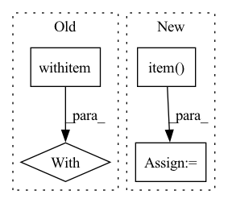

Pattern ID :34816
Before Change
targets["target_seg"] = seg_mask.squeeze().to(device=self._device)
// Make prediction
with autocast ():
losses, predictions = self._model.train_step(data, targets, evaluation=True)
loss_abs = sum(losses.values())
loss_agg += loss_abs.item()After Change
loss_agg += loss_abs.item()
loss_bbox_agg += loss_dict["bbox"].item()
loss_giou_agg += loss_dict["giou"].item()
loss_cls_agg += loss_dict["cls"].item()
loss = loss_agg / len(self._val_loader)
loss_bbox = loss_bbox_agg / len(self._val_loader)In pattern: SUPERPATTERN
Frequency: 4
Non-data size: 4
Instances Fragment ID: 99783014
Project Name: bwittmann/transoar
Commit Name: d1d610ce7014a86c72c7d5625dbe82be40b2c340
Time: 2022-06-24
Author: bastian.wittmann@tum.de
File Name: transoar/trainer.py
M Class Name: Trainer
N Class Name: Trainer
M Method Name: _validate(2)
N Method Name: _validate(2)
M Parent Class:
N Parent Class:
M File Name: transoar/trainer.py
N File Name: transoar/trainer.py
M Start Line: 105
M End Line: 146
N Start Line: 100
N End Line: 141
Before Change
targets["target_seg"] = seg_mask.squeeze().to(device=self._device)
// Make prediction
with autocast ():
losses, _ = self._model.train_step(data, targets, evaluation=False)
loss_abs = sum(losses.values())
self._optimizer.zero_grad()After Change
loss_agg += loss_abs.item()
loss_bbox_agg += loss_dict["bbox"].item()
loss_giou_agg += loss_dict["giou"].item()
loss_cls_agg += loss_dict["cls"].item()
loss = loss_agg / len(self._train_loader)
loss_bbox = loss_bbox_agg / len(self._train_loader) Fragment ID: 99783015
Project Name: bwittmann/transoar
Commit Name: d1d610ce7014a86c72c7d5625dbe82be40b2c340
Time: 2022-06-24
Author: bastian.wittmann@tum.de
File Name: transoar/trainer.py
M Class Name: Trainer
N Class Name: Trainer
M Method Name: _train_one_epoch(2)
N Method Name: _train_one_epoch(2)
M Parent Class:
N Parent Class:
M File Name: transoar/trainer.py
N File Name: transoar/trainer.py
M Start Line: 46
M End Line: 88
N Start Line: 42
N End Line: 83
Before Change
def model_image(fig, ax, model, image = None, showcbar = True, **kwargs):
if image is None:
with torch .no_grad():
model.sample(model.model_image)
image = model.model_image.data.detach().cpu().numpy()
imshow_kwargs = {After Change
for M in model.model_list:
if isinstance(M,models.Sky_Model):
try:
sky_level = (10**(M["sky"].value)*model.target.pixelscale**2).detach().cpu().item()
print("subtracting sky level: ", sky_level)
break
except Exception as e:
print(e) Fragment ID: 99783013
Project Name: connorstoneastro/autoprof
Commit Name: 53be3d025f16413cb88735d0e934f1282bd41a02
Time: 2022-12-12
Author: connorstone628@gmail.com
File Name: autoprof/plots/image.py
M Class Name: AnonimousClass
N Class Name: AnonimousClass
M Method Name: model_image(5)
N Method Name: model_image(5)
M Parent Class:
N Parent Class:
M File Name: autoprof/plots/image.py
N File Name: autoprof/plots/image.py
M Start Line: 47
M End Line: 68
N Start Line: 48
N End Line: 69
Before Change
dfs = []
// Keep track of percentage of test triples per relation type
with torch .no_grad():
for rid in tqdm(torch.unique(test_spo[:, 1]), desc="Relation"):
// Get all test triples with this relation
test_filt = test_spo[test_spo[:, 1] == rid]
After Change
// Keep track of percentage of test triples per relation type
for rid in tqdm(torch.unique(test_spo[:, 1]), desc="Relation"):
rid = rid.item()
// Get all test triples with this relation
test_filt = test_spo[test_spo[:, 1] == rid]
Fragment ID: 99783018
Project Name: tsafavi/codex
Commit Name: 3dddca246e4fb616cef251bafb32dac648e8eedb
Time: 2020-07-08
Author: tsafavi@umich.edu
File Name: scripts/baseline.py
M Class Name: AnonimousClass
N Class Name: AnonimousClass
M Method Name: main(0)
N Method Name: main(0)
M Parent Class:
N Parent Class:
M File Name: scripts/baseline.py
N File Name: scripts/baseline.py
M Start Line: 171
M End Line: 222
N Start Line: 171
N End Line: 218